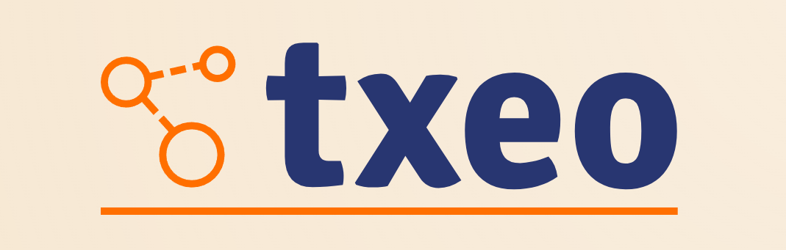

Welcome to txeo Library Documentation¶
txeo is a lightweight and intuitive C++ wrapper for TensorFlow, designed to simplify TensorFlow C++ development while preserving high performance and flexibility. Built entirely with Modern C++, txeo allows developers to use TensorFlow with the ease of a high-level API, eliminating the complexity of its low-level C++ interface.
txeo is an open-source library hosted at Github.
Main Features¶
- 📦 Intuitive API – A clean and modern C++ interface, simplifying TensorFlow C++ usage.
- 🔧 High-Level Tensor Abstraction – Easily create, manipulate, and operate on tensors.
- 💾 Flexible Tensor IO – Seamless reading and writing of tensors to text files.
- 🏗 Simplified Model Loading – Load and run saved TensorFlow models with minimal setup.
- ⚡ XLA Acceleration – Effortlessly enable or disable TensorFlow’s XLA optimizations.
- 🚀 Near-Native Performance – Achieves 99.35% to 99.79% of native TensorFlow speed with negligible overhead.
- 🛡 Encapsulated TensorFlow API – Fully abstracts TensorFlow internals for a cleaner, more maintainable experience.
Performance Comparison¶
txeo was benchmarked against the native TensorFlow C++ API using inference from a saved multiclassification convolution model.
- Model and other info:
- 279,610 parameters
- 1 Softmax Output Layer with 10 classes
- 3 Fully-Connected ReLU Convolutional Layers with 200 nodes each
- Input: 210,000 grayscale images (28×28).
- CPU: AMD Ryzen 7 5700X CPU
- TensorFlow: Compiled with CPU optimization
Results Overview¶
| Compiler | txeo (μs) | TensorFlow C++ (μs) | Difference (%) |
|---|---|---|---|
| GCC | 233,994 | 232,494 | +0.65% |
| Intel | 234,489 | 232,683 | +0.78% |
| Clang | 236,858 | 234,016 | +1.21% |
- The performance overhead is negligible, ranging from 0.65% to 1.21%.
- txeo’s abstraction layer provides ease of use with almost no cost to performance.
Roadmap¶
txeo is actively evolving! Here are some of the upcoming features:
🏋️ Training Capabilities¶
- Model Training - Enable training models using TensorFlow C++.
- Backpropagation Support - Implement automatic differentiation.
- Gradient Descent & Optimizers - Integrate optimizers like SGD and Adam.
🔢 Advanced Tensor Operations¶
- Linear Algebra Functions (SVD, QR decomposition) - Matrix Computations on tensors.
📊 Model Saving & Loading Enhancements¶
- Checkpointing - Save model weights at different training stages.
- Frozen Graph Support - Load & optimize frozen models for inference.
📬 Contact¶
For any inquiries or contributions:
- GitHub Discussions: Start a discussion
- Issue Reporting: Open an issue
- Email: robertodias70@outlook.com (for serious inquiries only)
License¶
txeo is licensed under the Apache License 2.0, meaning it is open-source, free to use, modify, and distribute, while requiring proper attribution.
📄 Third-Party Licenses¶
txeo depends on third-party libraries that have their own licenses:
- TensorFlow C++ - Licensed under Apache License 2.0
- 📜 TensorFlow License
- 🔗 TensorFlow GitHub
- Protobuf - Licensed under BSD 3-Clause
- 📜 Protobuf License
📌 Note: The precompiled binaries of TensorFlow and Protobuf provided in the releases section are unmodified versions of the official source code.